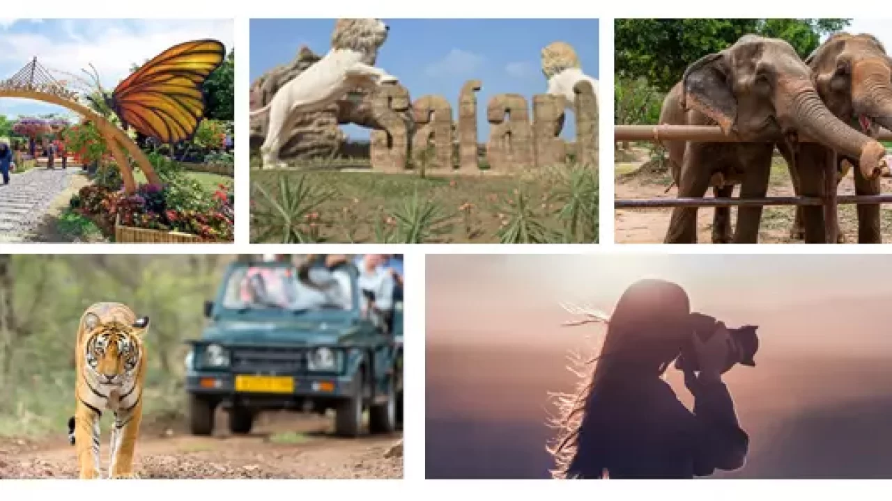
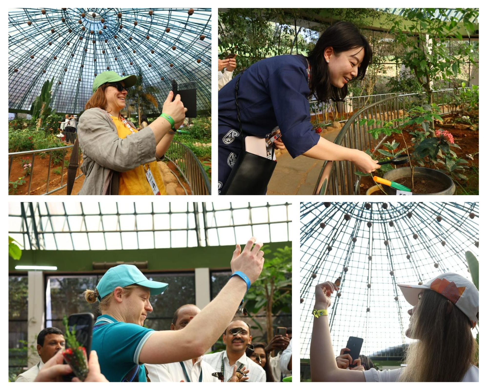
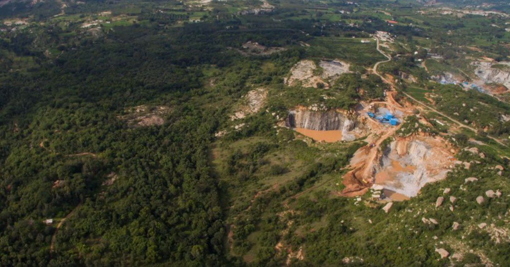
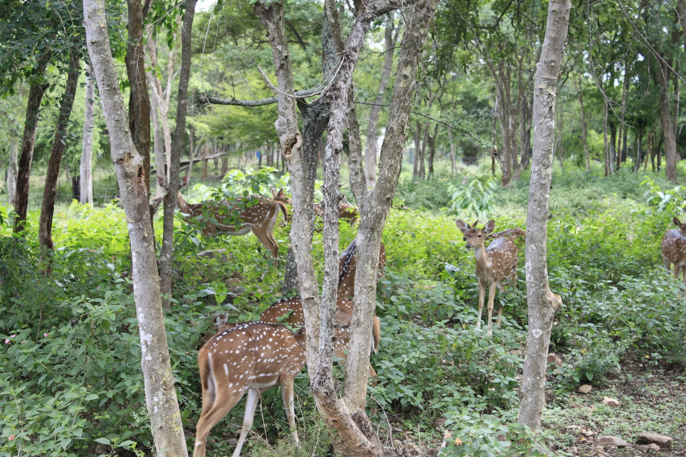
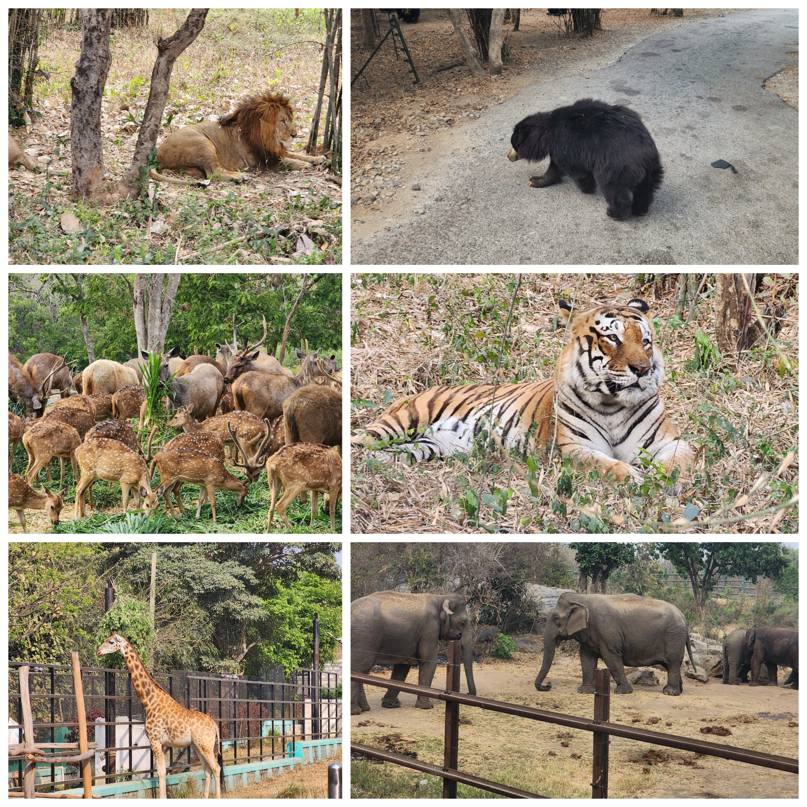
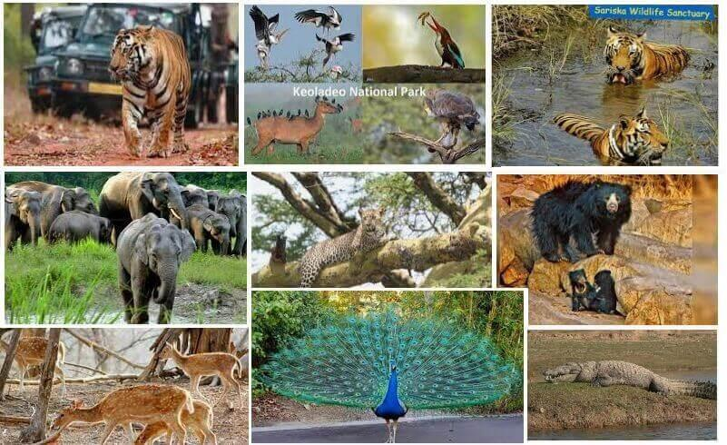
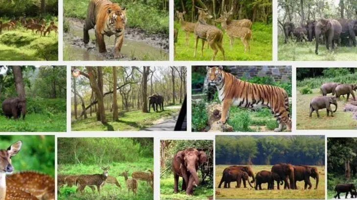
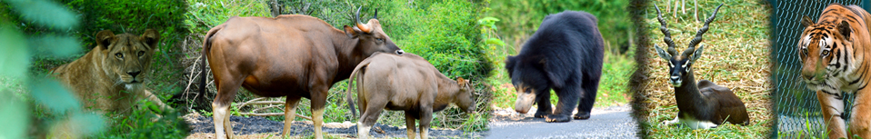
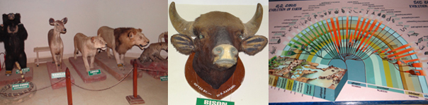

This was started in a very modest way in the form of "Picnic corner" during the year 1971 in order to provide the picnic facilities to the urban population leaving in the vicinity of Bengaluru. The area of the zoo is a saddle between the Champakadhama hill and Mirza hill in the Bannerghatta Sandal Reserve. A variety of Mammals, Reptiles and Birds of both exotic and Indian origin comprising 1941 animals belonging to 94 species are displayed in captivity. In addition there is a Museum and an Auditorium for the visitors' education. Most prominent and interesting ones are Thamin deer, Hog deer, King Cobra, Crocodiles, Himalayan black bear, Panthers and various birds. Present extent of Zoo area is 12 Ha and it is under the process of expansion by adding another 28.00 Ha. Eight new enclosures will be constructed in the expansion area
Museum displays various animal trophies, skeletons, photographs, fossils etc having high educational value.
